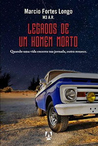

A verdade sobre o amor e tudo nele? Eu jamais iria desistir dele, se não provavelmente ele iria desistir de mim. Eu aprendi com o tempo que viver em corações alheios fadados a não terem finais felizes, me fizeram buscar o fundo d cada garrafa que me deixara bêbado após cada de vida vidido. Afinal de ] contas, quem nunca sofreu de amo? Que nunca procurou ser pleno com a alma e sair do manicômio louco da solidão? Você pode descobrir um amor jovial através dessas páginas, você pode criar um amor em forma de pessoa e amá-lo como algo que te coloque em estado de glória. Por isso eu tive a sorte de me esbarra com o destino final da minhas buscas. O bom do amor é quando ele te limpa por dentro, é quando a calmaria do seu coração te transforma em um Buda, assim todos são bem vindos a descobrir que se permanecer no amor é a segunda coisa mais bela do mundo. -*.*99260*
Legados de um Homem Morto
Parte - 1
Apresentação:
Legados de um homem morto é a segunda obra de Marcio Fortes Longo. O autor, natural da Baixada Fluminense, Rio de Janeiro, começou na sua infância a despertar a atenção de professores, amigos e familiares por sua criatividade pulsante. Desde os onze anos de idade ele escreve e expõe seus inspirados textos, que até hoje guarda no que chama de seu "caderno de pensamentos". Após conquistar vários seguidores nas redes sociais, Marcio Fortes Longo se viu desafiado e motivado a escrever um romance, que se tornou a obra em questão. Inspirado por diferentes gêneros e estilos literários, sua eclética paixão passa por obras de Charles Bukowski a Padre Fabio de Melo, passando por Jack Kerouac.
